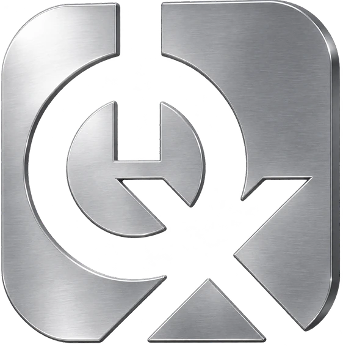
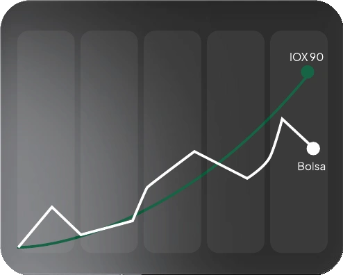

Grupo IOX + de 22 anos no mercado
Você decide o legado da sua vida financeira.
Em períodos de ajuste no mercado, ter uma parte do patrimônio em
um ativo descorrelacionado da Bolsa faz toda a diferença.


- Reguladapela CVM
- Custódiapela QITECH
- 22 anosde mercado
- 3,5milclientes
- Grupo IOXentre as maiores gestoras de FIDIC do país
Grupo IOX Para quem quer constância
Explore o mundo com o seu legado financeiro.
Incerteza faz parte do mercado.
Improviso não precisa fazer parte
da sua carteira.
Antes do segundo turno, analistas já apontavam que este cenário poderia trazer alta nos juros futuros, pressão sobre o dólar e correção na Bolsa.
A recomendação mais repetida entre especialistas foi a mesma: manter a carteira diversificada, em vez de concentrar tudo em um único resultado.
Viva o seu legado financeiro.
O IOX 90 já atravessou um período assim.
Em 2024, o risco fiscal pesou no mercado. A Bolsa fechou o ano com queda de 10,36%, o IFIX, índice dos fundos imobiliários, caiu 5,89%, e o dólar subiu 27%, encerrando o ano a R$ 6,18. No mesmo ano, o IOX 90 rendeu 18,71% bruto.
Em dezembro, o mês mais tenso, a Bolsa caiu 4,28% e o fundo rendeu 1,39%, mantendo o que fez nos 38 meses desde a criação, em agosto de 2023: nenhum mês negativo. Em 2026, até setembro, a Bolsa já teve cinco meses negativos e o IFIX, seis. O IOX 90, nenhum.
38 meses.Nenhum mêsnegativo.
Juros altos pesam na
Bolsa e nos imóveis. O IOX 90 segue
trabalhando.
Quando o mercado fica cauteloso, os juros tendem a ficar altos por mais tempo. Hoje a Selic, a taxa básica de juros do país, está em 13,75% ao ano. Juros altos costumam pressionar ações e fundos imobiliários e encarecer o financiamento de imóveis.
O IOX 90 funciona de outro jeito: por ser um fundo de recebíveis, o retorno do ativo vem do crédito a empresas, por meio dos valores que elas têm a receber, e não da cotação do dia. Em 2025, o IOX 90 rendeu 20,21% bruto, ou 17,18% já descontado o imposto de renda, contra cerca de 13,51% da taxa média das LCIs isentas e 5,96% de renda bruta de aluguel residencial.
O que cada patrimônio rendeu em 2025
- IOX 90, líquido de IRbruto 20,21%
- 17,18%
- LCI, taxa média (isenta de IR)taxa média de 2025
- 13,51%
- Imóvel residencial, renda de aluguelbruta, antes de custos
- 5,96%
Simule: o rendimento que o seu dinheiro poderia ter, se tivesse investido no IOX 90 em tempos de incerteza anteriores.
Escolha um valor e veja o caminho que ele teria feito de janeiro de 2024 até setembro de 2026. R$ 50 mil no IOX 90 cresceram em todos os anos e chegaram a R$ 81.482 brutos. Na Bolsa, o mesmo valor caiu para R$ 44.820 no fim de 2024 antes de se recuperar. No IFIX, terminou em R$ 56.672.
O período começa em janeiro de 2024 para comparar anos completos dos três investimentos. Em momentos de incerteza, o caminho importa tanto quanto o destino.
Simulação ilustrativa, com rentabilidade bruta composta por ano: 2024 e 2025 fechados e 2026 até setembro. Não considera impostos, taxas ou custos e não representa promessa de rentabilidade. Rentabilidade passada não representa garantia de resultado futuro.
Fontes: Mais Retorno (IOX 90), consulta em 05/11/2026; Finance News; Status Invest; Meus Dividendos; FIIs.com.br. Retornos anuais de 2025 do Ibovespa e do IFIX: B3.
Construao seu legado.
Estratégia começacom uma boaconversa.
O Grupo IOX atua há mais de 22 anos no mercado de crédito. No IOX 90, a custódia da sua conta é feita pela QI Tech e a administração pela Tercon, instituições independentes que dão transparência à operação.
Deixe seus dados de contato e um especialista do IOX 90 vai entender o seu momento e mostrar, com calma, se o fundo faz sentido para equilibrar a sua carteira.
Condições sujeitas à lâmina e ao regulamento do fundo.
Vamos entender o seu momento.
Preencha os dados para conhecer o IOX 90.
Vamos conversar sobre o seu momento.
Os dados preenchidos não foram enviados. Continue o contato pelo e-mail abaixo.
contato@iox.com.vcPronto para construir olegado da sua vidafinanceira?
Quero construir um LegadoSeu patrimônio merece critério.